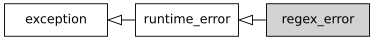

std::regex_error
来自cppreference.com
| 在标头 <regex> 定义
|
||
| |
(C++11 起) | |
定义抛出的异常对象类型，以报告正则表达式库中的错误。

继承图
成员函数
构造 regex_error 对象 (公开成员函数) | |
替换 regex_error 对象 (公开成员函数) | |
获得 regex_error 的 std::regex_constants::error_type (公开成员函数) |
继承自 std::exception
成员函数
[虚] |
销毁该异常对象 ( std::exception 的虚公开成员函数) |
[虚] |
返回解释性字符串 ( std::exception 的虚公开成员函数) |
示例
运行此代码
#include <iostream>
#include <regex>
int main()
{
try
{
std::regex re("[a-b][a");
}
catch (const std::regex_error& e)
{
std::cout << "捕获 regex_error: " << e.what() << '\n';
if (e.code() == std::regex_constants::error_brack)
std::cout << "错误码为 error_brack\n";
}
}
可能的输出：
捕获 regex_error: The expression contained mismatched [ and ].
错误码为 error_brack